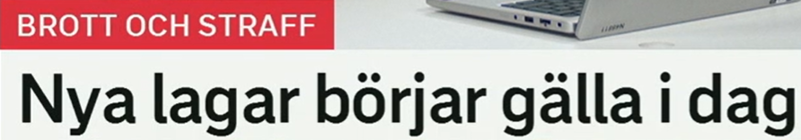
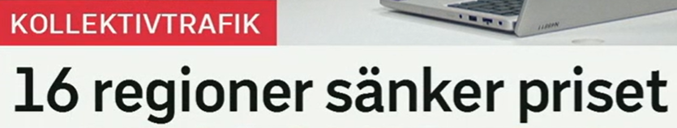
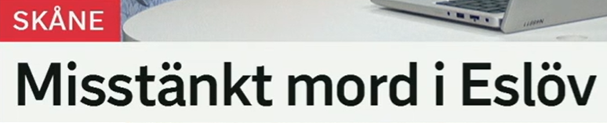
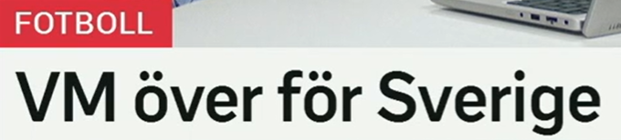
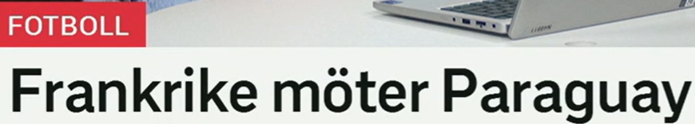

标题总览
Snipaste_2026-07-05_20-16-58.png
Snipaste_2026-07-05_20-17-35.png
Snipaste_2026-07-05_20-17-56.png
Snipaste_2026-07-05_20-18-12.png
Snipaste_2026-07-05_20-18-52.png

Nya lagar börjar gälla i dag
新法律今天开始生效。
完整句式。börjar gälla 是法律、规则、票证和协议生效时极高频的表达。
lag · en-名词
词形：en lag–lagen–lagar–lagarna
近义：regel, bestämmelse
搭配：stifta/bryta mot/följa en lag
相关：laglig 合法；olaglig 非法
börja gälla
börja：börjar–började–börjat
gälla：适用、生效、涉及
近义：träda i kraft（正式）
反义：sluta gälla, upphävas
Lagen träder i kraft i dag. 法律今天生效。
Reglerna gäller alla. 这些规则适用于所有人。

16 regioner sänker priset
16 个大区下调价格。
栏目说明主题是公共交通，但标题没有写明哪一种票价、降价幅度或期限。
sänka · 及物动词
词形：sänker–sänkte–sänkt
含义：降低某物
近义：minska, reducera
反义：höja
pris · ett-名词
词形：ett pris–priset–priser–priserna
搭配：sänka/höja priset, lågt pris
辨析：也可表示“奖项”，由语境判断。
相关：biljettpris 票价
Regionen sänker biljettpriset. 该大区下调票价。
Priset sjunker. 价格下降。（sjunka 为不及物）

Misstänkt mord i Eslöv
埃斯勒夫发生疑似谋杀案。
这里 misstänkt 修饰 mord，意思是“被怀疑属于谋杀性质的案件”，不是“嫌疑人”。
misstänkt · 形容词/名词
原形：misstänka 怀疑
变化：misstänkt, misstänkta
名词：en misstänkt 嫌疑人
搭配：misstänkt för brott
mord · ett-名词
词形：ett mord–mordet–mord–morden
相关：mörda 谋杀；mordutredning
搭配：utreda ett mord
场景：警方与司法新闻，正式。
Polisen utreder ett misstänkt mord. 警方正在调查一起疑似谋杀案。
En person är misstänkt för brottet. 一人涉嫌该罪行。

VM över för Sverige
瑞典的世界杯征程结束。
省略 är 的体育标题：VM är över för Sverige。它强调瑞典不再继续参加该届赛事。
vara över
含义：结束了
近义：vara slut, ha avslutats
反义：börja, pågå
搭配：matchen är över
VM · 缩写
全称：världsmästerskap
搭配：spela i VM, vinna VM
相关：EM 欧洲锦标赛；OS 奥运会
语法：常作中性单数：ett VM
Turneringen är över för laget. 该队的锦标赛征程结束。
Matchen pågår fortfarande. 比赛仍在进行。

Frankrike möter Paraguay
法国对阵巴拉圭。
体育语境中 möta 表示“迎战”；现在时也常用于表达已经安排好的近期赛程。
möta · 动词
词形：möter–mötte–mött
体育近义：spela mot
其他义：遇见；面对
搭配：möta motstånd
motstånd · ett-名词
含义：抵抗；对手带来的阻力
相关：motståndare 对手
搭配：hårt motstånd
反义概念：stöd 支持
Frankrike spelar mot Paraguay. 法国对阵巴拉圭。
Laget möter en stark motståndare. 球队迎战一名强劲对手。
重点词表与标题表达
| 词汇 | 中文 | 搭配 | 近义 / 反义 |
|---|---|---|---|
| börja gälla | 开始生效 | lagen börjar gälla | träda i kraft |
| lag | 法律 | bryta mot/följa lagen | regel, bestämmelse |
| sänka | 降低某物 | sänka priset | reducera / höja |
| sjunka | 自行下降 | priset sjunker | minska / stiga |
| misstänkt | 疑似的；嫌疑人 | misstänkt mord; misstänkt för | befarad（依语境） |
| utreda | 调查 | utreda ett brott | undersöka, granska |
| vara över | 结束了 | matchen är över | vara slut / pågå |
| möta | 对阵、面对 | möta ett lag | spela mot |
使动与自动
Regionen sänker priset（大区降低价格）；Priset sjunker（价格下降）。同类还有 höja/stiga。
生效
börja gälla 通用；träda i kraft 更正式，常见于法律报道。
名词化标题
Misstänkt mord i Eslöv 无谓语，完整句可用 Polisen utreder …，但后者并非截图原文。
省略 är
VM över för Sverige = VM är över för Sverige。
自测
搭配填空
1. Lagen träder i ___.
2. Regionen ___ priset.
3. Polisen ___ ett mord.
答案
1. kraft 2. sänker 3. utreder
翻译练习
1. 规则适用于所有人。
2. 比赛结束了。
3. 法国迎战强劲对手。
参考答案
1. Reglerna gäller alla.
2. Matchen är över.
3. Frankrike möter en stark motståndare.